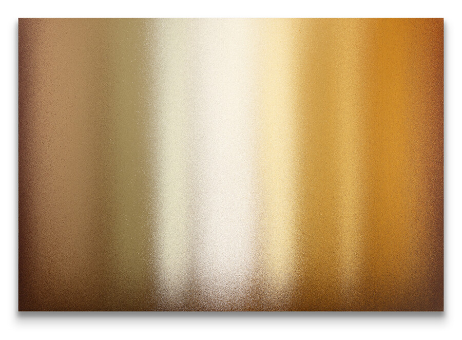

Day’s End
2026 Spotlight Exhibition Series featuring Curtis Anthony Bozif and Siri Stensberg
Curated by Shane McAdams
Designed to provide career development and experience for emerging visual artists, the Spotlight Exhibition Series shares concept-driven, concurrent solo exhibitions by multiple artists: each showing a complete body of work. In 2026, Curtis Anthony Bozif and Siri Stensberg exhibit alongside one another; creating a dialogue between their interdisciplinary practices. This marks the final installment of this series.
“Day’s End” by Curtis Anthony Bozif
It has become common on summer evenings for the sun, as it makes its way to meet the horizon, to be filtered through a thick, toxic atmospheric haze of smoke and particulate ash from wildfires burning in Canada and the American West, coloring the skies of the upper Midwest gold, orange, and crimson. The Vespers paintings take place within this light, which stirs in me a mix of awe and foreboding, a sense of imminence and inertia, and a kind of contemplation at a day’s end that comes close to prayer.